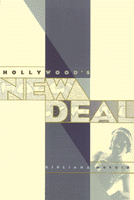

A ground-breaking exploration of the entertainment industry's role in promoting New Deal ideology in the thirties
A ground-breaking exploration of the entertainment industry's role in promoting New Deal ideology in the thirties


 A ground-breaking exploration of the entertainment industry's role in promoting New Deal ideology in the thirties
A ground-breaking exploration of the entertainment industry's role in promoting New Deal ideology in the thirties

|  |
Hollywood's New DealGiuliana Musciopaper EAN: 978-1-56639-496-3 (ISBN: 1-56639-496-1) |
Despite the economic hardship of the thirties, people flocked to the movies in unprecedented numbers. At the same time, the Roosevelt Administration was trying to implement the New Deal and increase the influence and power of the federal government. Weaving together film and political history, Giuliana Muscio traces the connections between Depression Era Hollywood and the popularity of FDR, asserting that politics transformed its public into spectators while the movie industry transformed its spectators into a public. Hollywood's New Deal reveals the ways in which this reciprocal relationship between politics and film evolved into a strategic effort to stabilize a nation in the clutches of economic unrest by creating a unified American consciousness through national cinema.
Muscio analyzes such regulatory practices as the Hays Code, and the government's scrutinizing of monopolistic practices such as block booking and major studio ownership of movie theaters. Hollywood's New Deal, focusing on the management and structure of the film industry, delves deep into the Paramount case, detailing the behind-the-scenes negotiations and the public statements that ended with film industry leaders agreeing to self regulate and to eliminate monopolistic practices.
Hollywood's acquiescence and the government's retreat from antitrust action show that they had found a mutually beneficial way of preserving their own spheres of power and influence. This book is indispensable for understanding the growth of the film industry and the increasing political importance of mass media.
"Hollywood's New Deal presents important insights into the history of the American cinema of the '30s..."
—Contemporary Sociology
"...anyone interested in Hollywood or the New Deal will want to read this informative and useful study."
—The Journal of American History
Acknowledgments
Introduction
1. The New Deal and the Media
2. Hollywood and Washington
3. Cinema and the New Deal
4. The Film Industry in the Thirties
5. The ParamountCase
Conclusion
Notes
Index
Giuliana Muscio is Associate Professor of Cinema at the University of Padua, Italy.
Culture and the Moving Image, edited by Robert Sklar.
The Culture and the Moving Image series, edited by Robert Sklar, seeks to publish innovative scholarship and criticism on cinema, television, and the culture of the moving image. The series will emphasize works that view these media in their broad cultural and social frameworks. Its themes will include a global perspective on the world-wide production of images; the links between film, television, and video art; a concern with issues of race, class, and gender; and an engagement with the growing convergence of history and theory in moving image studies.
© 2015 Temple University. All Rights Reserved. This page: http://www.temple.edu/tempress/titles/1159_reg.html.